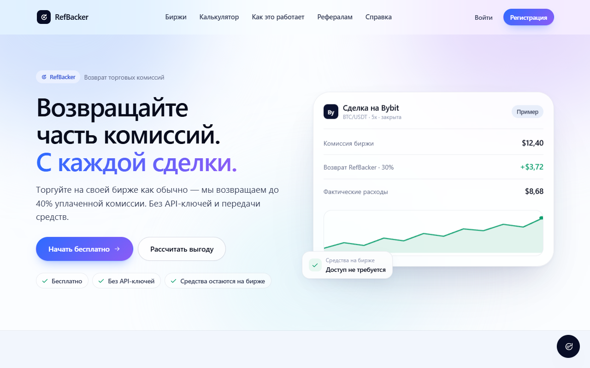

RefBacker
Web-Plattform und Telegram Mini App, die Nutzern einen Teil der Handelsgebühren von Krypto-Börsen zurückerstattet (Refback).
- Frontend in Preact/JSX, Backend als Node.js-API auf Vercel (Region Frankfurt), Datenbank PostgreSQL
- Anmeldung per E-Mail, Telegram und Google (Prüfung der OpenID-Connect-Token über JWKS); zwei Konten lassen sich zusammenführen
- Admin-Bereich mit eigener Analyse: Nutzerpfade, Conversion-Funnel und Absprünge
- Qualitätssicherung: ESLint, automatisierte API-Tests auf einer separaten Testdatenbank, Prüfung vor jedem Deployment
- Tägliche automatische Datenbank-Backups (Windows-Aufgabenplanung) mit getesteter Wiederherstellung
Die Oberfläche ist auf Russisch. Den Quellcode (privat) zeige ich gern im Gespräch.